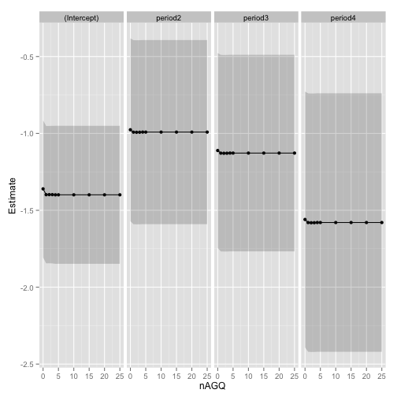
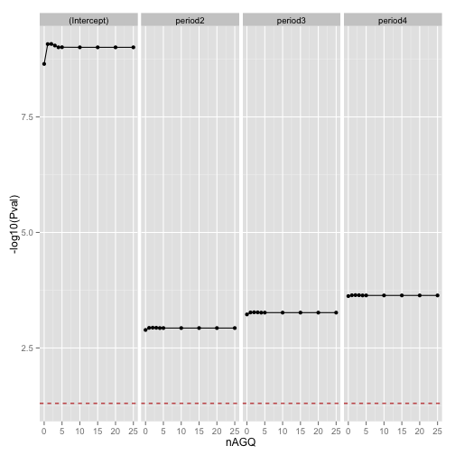
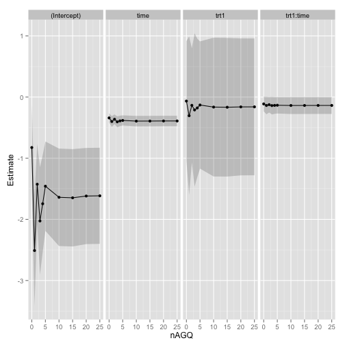

140.655 Biostat Lab 5
View the Project on GitHub lcolladotor/BiostatLab5
This project was done by Emily Huang and Leonardo Collado-Torres for the 140.655 Analysis of Longitudinal Data laboratory session 5 for biostatistics students.
Instructions
Conduct, using a simulation, a sensitivity analysis of the change in effects
estimates as a function of the number of quadrature points.
Consider different integration methods.
As a reference/dataset starting point consider using (Lesaffre & Spiessens, 2001).
Theory
Below some of the key theoretical points are shown. For more details, please check out the presentation.
General GLMM setup
1) Distribution assumption
- \(Y_{ij}|b_{i}\sim\) Exponential family
- \(Var(Y_{ij}|b_{i})=v\{E(Y_{ij}|b_{i})\}\phi\), where \(v\) is a known function
- \(Cov(Y_{ij},Y_{ik}|b_{i})=0\)
2) Systematic component
- \(\eta_{ij}=X_{ij}\beta+Z_{ij}b_{i}\)
3) Link function
- \(g\{E(Y_{ij}|b_{i})\}=\eta_{ij}=X_{ij}\beta+Z_{ij}b_{i}\) for some known link function, \(g\)
4) Random effects
- Assumed to have some probability distribution, such as \(b_{i}\sim MVN(0,G)\)
- \(b_{i}\) are assumed to be independent of the covariates
Gauss-Hermite Quadrature
\[ \int_{-\infty}^{\infty} h(v)e^{-v^{2}}dv \approx \sum_{k=1}^{d}h(x_{k})w_{k} \]
- \(d\) quadrature points (weights, \(w_{k}\), and evaluation points, \(x_{k})\)
- The more quadrature points used, the more accurate the approximation
- But computational burden increases with quadrature points, and grows exponentially with the number of random effects
Quadrature exploration results
The lme4 package includes the function glmer to fit GLMMs. For the purpose of this analysis, the nAGQ argument is the most important one.
nAGQ: integer scalar - the number of points per axis for evaluating
the adaptive Gauss-Hermite approximation to the
log-likelihood. Defaults to 1, corresponding to the Laplace
approximation. Values greater than 1 produce greater
accuracy in the evaluation of the log-likelihood at the
expense of speed. A value of zero uses a faster but less
exact form of parameter estimation for GLMMs by optimizing
the random effects and the fixed-effects coefficients in the
penalized iteratively reweighted least squares step.
Contagious bovine pleuropneumonia
The lme4 package includes the cbpp dataset which is described below:
Contagious bovine pleuropneumonia (CBPP) is a major disease of
cattle in Africa, caused by a mycoplasma. This dataset describes
the serological incidence of CBPP in zebu cattle during a
follow-up survey implemented in 15 commercial herds located in the
Boji district of Ethiopia. The goal of the survey was to study
the within-herd spread of CBPP in newly infected herds. Blood
samples were quarterly collected from all animals of these herds
to determine their CBPP status. These data were used to compute
the serological incidence of CBPP (new cases occurring during a
given time period). Some data are missing (lost to follow-up).
EDA
A quick exploration of the data set is shown below. In particular, we could be interested in the probability of serological cases by considering a random intercept by herd.
## herd incidence size period
## 1 : 4 Min. : 0.00 Min. : 2.0 1:15
## 3 : 4 1st Qu.: 0.00 1st Qu.: 9.0 2:14
## 4 : 4 Median : 1.00 Median :16.0 3:14
## 5 : 4 Mean : 1.77 Mean :15.0 4:13
## 6 : 4 3rd Qu.: 2.00 3rd Qu.:21.2
## 7 : 4 Max. :12.00 Max. :34.0
## (Other):32

In the above plot we can see that the probability (number of events incidence divided by the herd size) of serological events does change by herd.
Estimates vs quadrature points
We can now explore the results for
nAGQ = 0which estimates the coefficients in the penalized iteratively reweighted least squares stepnAGQ = 1which is the equivalent to using the Laplace approximationnAGQ = 2, 3, 4, 5, 10, 15, 20, 25which specify different numbers of quadrature points. Note that the maximumglmerallows is 25.
The next plot shows how the resulting estimates for each of the coefficients changes by the nAGQ value. Estimates are shown with +- standard error bands. In this case, it stabilizes very quickly with the only noticeable different results being for nAGQ = 0.

P-values vs quadrature points
This plot shows the p-values for the coefficients by the different nAGQ values. The results from the previous plot are reflected in this one.

Criterions vs quadrature points
This plot shows the AIC and BIC criterions as well as the deviance (\(-2 * \text{logLikelihood}\)) for each of the nAGQ values. Compared to the previous results, we note a very large difference between values 1 and 2. The documentation for glmer states that using nAGQ=9 provides a better evaluation of the deviance (meaning the log likelihood and thus the deviance, AIC and BIC).

Conclusions
With the cbpp dataset we can notice how using different nAGQ values can affect your estimates. Because of the model specification and dataset size, in this case there is nearly no computation burden for increasing the nAGQ values and you gain better deviance estimates.
Two treatments for toe-nail infection
The data from (Lesaffre & Spiessens, 2001) is available online. The researchers were interested in the degree of onycholysis which is related to the degree of separation of the nail plate from the nail-bed. The following shows a basic exploration of the available data.
## idnr y trt time visit
## Min. : 1 Min. :0.000 0:937 Min. : 0.00 1:294
## 1st Qu.:102 1st Qu.:0.000 1:971 1st Qu.: 1.00 2:288
## Median :192 Median :0.000 Median : 3.00 3:283
## Mean :190 Mean :0.214 Mean : 4.69 4:272
## 3rd Qu.:276 3rd Qu.:0.000 3rd Qu.: 8.89 5:263
## Max. :383 Max. :1.000 Max. :18.50 6:244
## 7:264

The previous plot shows whether the subjects had no or mild (0) versus moderate and severe (1) onycholysis. Two treatments (0 and 1) are compared against each other and subjects were observed up to 7 visits (there is some loss to follow-up). Y axis values are jittered to reduce overplotting. Red line is the fitted logistic regression while the blue line is the loess curve; both include their spreads.
The model explored was
\[ \text{logit}\{P(Y_{ij} = 1 | b_i, \beta)\} = \beta_0 + \beta_1 \text{treatment}_i + \beta_2 t_{ij} + \beta_3 t_{ij} \times \text{treatment}_i + \beta_i \]
where
- \(Y_{ij}\) is the binary response at the $j$th visit of the $i$th subject
- \(i = 1, \ldots, N\)
- \(j = 1, \ldots, n_i\)
- \(b_i = \sigma z_i\)
- \(z_i \sim N(0, 1)\)
Estimates vs quadrature points
We can now explore the results for different numbers of quadrature points just like we did before. The next plot shows how the resulting estimates for each of the coefficients changes by the nAGQ value. Estimates are shown with +- standard error bands.
In this dataset, the results are much more unstable (specially the intercept and treatment coefficients) for low values of nAGQ.

P-values vs quadrature points
This plot shows the p-values for the coefficients by the different nAGQ values. In contrast to the previous plot, we can observe how much the p-value for the time coefficient is much more variable at low nAGQ values than the p-value for the treatment coefficient. It is also very important to note how the p-value for the interaction coefficient is not significant at the 0.05 confidence level for low nAGQ values.

Criterions vs quadrature points
This plot shows the AIC and BIC criterions as well as the deviance (\(-2 * \text{logLikelihood}\)) for each of the nAGQ values. As in the cbpp dataset, the log likelihood is very variable for low nAGQ values. The results are similar to the previously published results(Lesaffre & Spiessens, 2001) when they use NLMIXED with the adaptive method.

Conclusions
While the model structure was very similar to the cbpp dataset, the data itself presented a stronger challenge to the GLMM fitting methods due to the log likelihood surface (Lesaffre & Spiessens, 2001). Thus, if you fitted a GLMM assuming that the default number of quadrature points was enough, you would have gotten widely different results from the more numerically stable results from higher nAGQ values. It is thus important to check your results with higher nAGQ values.
Compared to the cbpp dataset, increasing the nAGQ value did lead to longer computing times but it was still very negligible. However, as stated in the glmer documentation, more complicated models will require much more computing power.
References
Web document generated using slidify (Vaidyanathan, 2012). Citations made with knitcitations (Boettiger, 2014). The presentation was made using ShareLatex (Oswald and Allen).
- Online LaTeX Editor ShareLaTeX - ShareLaTeX.com. https://www.sharelatex.com/
- Carl Boettiger, (2014) knitcitations: Citations for knitr markdown files. http://CRAN.R-project.org/package=knitcitations
- Emmanuel Lesaffre, Bart Spiessens, (2001) on The Effect of The Number of Quadrature Points in A Logistic Random Effects Model: an Example. Journal of The Royal Statistical Society: Series C (Applied Statistics) 50 325-335 10.1111/1467-9876.00237
- Ramnath Vaidyanathan, (2012) slidify: Generate reproducible html5 slides from R markdown. http://ramnathv.github.com/slidify/
R code
## Show the description of the nAGQ argument
library("gbRd")
cat(Rdo_args2txt("glmer", "nAGQ"))
## Show the cbpp dataset description
cat(paste(Rd_help2txt("cbpp", keep_section = "\\description",
omit_sec_header = TRUE), collapse = "\n"))
## Explore the cbpp dataset
summary(cbpp)
## Incidence/size vs period by herd
library("ggplot2")
eda1 <- ggplot(cbpp, aes(x = period, y = incidence/size,
group = 1)) + geom_point() + geom_line() + facet_grid(. ~
herd)
eda1
## Get the results for different nAGQ values
library("reshape2")
quadrature <- function(formula, data) {
## Results place holder
res <- vector("list", 10)
names(res) <- c(0:5, 10, 15, 20, 25)
aictab <- res
for (i in names(res)) {
j <- as.integer(i)
## Fit GLMM
fit <- glmer(formula, data = data, family = binomial,
nAGQ = j)
## Extract coefficients and criterion values
tmp <- summary(fit)$coefficients
res[[i]] <- data.frame(cbind(tmp, nAGQ = rep(j,
nrow(tmp))), check.names = FALSE)
res[[i]]$coef <- rownames(tmp)
rownames(res[[i]]) <- NULL
aictab[[i]] <- c(summary(fit)$AICtab, nAGQ = j)
}
## Format results and get them ready for plotting
res <- do.call(rbind, res)
colnames(res) <- c("Estimate", "SE", "Zval", "Pval",
"nAGQ", "coef")
aictab <- data.frame(do.call(rbind, aictab))
aictab <- melt(aictab, id = "nAGQ")
## Finish
final <- list(coef = res, aictab = aictab)
return(final)
}
## Get the results for the cbpp data
cbpp.res <- quadrature("cbind(incidence, size - incidence) ~ period + (1 | herd)",
data = cbpp)
## Estimates (with SE) vs nAGQ by coefficient
p1 <- ggplot(cbpp.res$coef, aes(x = nAGQ, y = Estimate,
group = 1)) + geom_point() + geom_line() + facet_grid(. ~
coef) + geom_ribbon(aes(ymin = Estimate - 1.96 *
SE, ymax = Estimate + 1.96 * SE), alpha = 0.2)
p1
## Pvalues vs nAGQ by coefficient
p2 <- ggplot(cbpp.res$coef, aes(x = nAGQ, y = -log10(Pval),
group = 1)) + geom_point() + geom_line() + facet_grid(. ~
coef) + geom_hline(aes(yintercept = -log10(0.05)),
colour = "#BB0000", linetype = "dashed")
p2
## Criterions vs nAGQ
p3 <- ggplot(subset(cbpp.res$aictab, variable != "logLik"),
aes(x = nAGQ, y = value)) + geom_point() + geom_line() +
facet_grid(. ~ variable) + ylab("")
p3
## The data is available at
## http://onlinelibrary.wiley.com/journal/10.1111/(ISSN)1467-9876/homepage/50_3.htm
download.file("http://onlinelibrary.wiley.com/store/10.1111/(ISSN)1467-9876/asset/homepages/C4827r.txt?v=1&s=173f4c2fb8340abfc68445b88a6f6eadeb2c68ee&isAguDoi=false",
"C4827r.txt")
## Read the data
c48 <- read.table("C4827r.txt", col.names = c("idnr",
"y", "trt", "time", "visit"), colClasses = c("integer",
"integer", "factor", "numeric", "factor"))
## Basic exploration
summary(c48)
## Basic EDA
eda2 <- ggplot(c48, aes(x = time, y = y, group = 1)) +
geom_point(position = position_jitter(height = 0.06),
alpha = 1/5, shape = 21, size = 1.2) + stat_smooth(method = loess) +
stat_smooth(method = glm, family = binomial, colour = "red") +
ylab("0 (no or mild) vs 1 (moderate or severe)") +
facet_grid(. ~ trt)
eda2
## Get the results for the c48 data
c48.res <- quadrature("y ~ trt * time + (1 | idnr)",
data = c48)
## Estimates (with SE) vs nAGQ by coefficient
p4 <- ggplot(c48.res$coef, aes(x = nAGQ, y = Estimate,
group = 1)) + geom_point() + geom_line() + facet_grid(. ~
coef) + geom_ribbon(aes(ymin = Estimate - 1.96 *
SE, ymax = Estimate + 1.96 * SE), alpha = 0.2)
p4
## Criterions vs nAGQ
p6 <- ggplot(subset(c48.res$aictab, variable != "logLik"),
aes(x = nAGQ, y = value)) + geom_point() + geom_line() +
facet_grid(. ~ variable) + ylab("")
p6
Reproducibility
This report was last updated on
## [1] "2014-03-10 00:34:21 EDT"
R session information:
## R version 3.0.2 (2013-09-25)
## Platform: x86_64-apple-darwin10.8.0 (64-bit)
##
## locale:
## [1] en_US.UTF-8/en_US.UTF-8/en_US.UTF-8/C/en_US.UTF-8/en_US.UTF-8
##
## attached base packages:
## [1] tools stats graphics grDevices utils datasets methods
## [8] base
##
## other attached packages:
## [1] reshape2_1.2.2 ggplot2_0.9.3.1 gbRd_0.4-11
## [4] knitcitations_0.5-0 bibtex_0.3-6 knitr_1.5
## [7] slidify_0.4 lme4_1.0-6 Matrix_1.1-2-2
## [10] lattice_0.20-23
##
## loaded via a namespace (and not attached):
## [1] codetools_0.2-8 colorspace_1.2-4 dichromat_2.0-0
## [4] digest_0.6.4 evaluate_0.5.1 formatR_0.10
## [7] grid_3.0.2 gtable_0.1.2 httr_0.2
## [10] labeling_0.2 markdown_0.6.4 MASS_7.3-29
## [13] minqa_1.2.3 munsell_0.4.2 nlme_3.1-111
## [16] plyr_1.8 proto_0.3-10 RColorBrewer_1.0-5
## [19] Rcpp_0.11.0 RCurl_1.95-4.1 scales_0.2.3
## [22] splines_3.0.2 stringr_0.6.2 whisker_0.3-2
## [25] XML_3.95-0.2 xtable_1.7-1 yaml_2.1.10
## Generate this report
library("slidify")
slidify("index.Rmd")